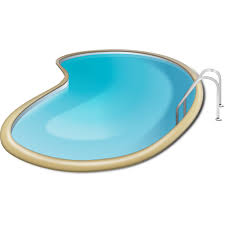
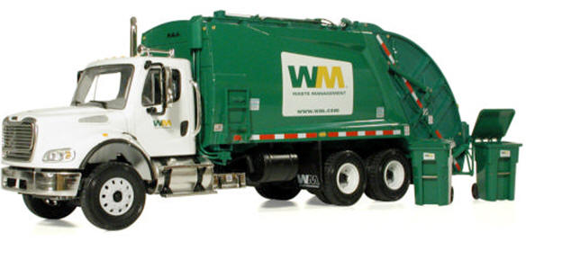

Parking
If you were parked illegally in the Williamsburg Square / Ashton place community and your car was towed, here is the information you need:8321 Beechcraft Ave, Gaithersburg
301-869-4800
Report a vehicle violating the parking rules. Need to report an abandoned vehicle, a vehicle with no tags or expired tags or a vehicle that is violating one of the WSAP parking rules? Report it to us by sending an email to the community manager. Be sure and include the address where the car is parked and describe the vehicle and nature of the problem. Your message will be forwarded to the WSAP Board and the management company to be followed up on.

Pool
The WSAP HOA pool is closed for the year and will reopen on Memorial Day weekend 2019.County Code Enforcement
Report housing code violations here
Trash Pick-up
Trash is picked up twice per week, Tuesday and Friday. When there is a holiday, trash pickup will still follow the Tuesday/Friday schedule.If you need help disposing of a large item visit the Montgomery County Bulk Trash Pickup Web Site.
Some items that you should not be put out for trash include:
- Appliances
- Furniture: Sofas, computer desks, book stands, TVs and TV stands
- Scrap Wood
- Sinks, Toilets, Bath tubs or any other large plumbing parts
- Dirt
- Hazardous Material
Was your trash not picked up or have a question about something you can dispose of? For questions about your trash only, contact Potomac Disposal.